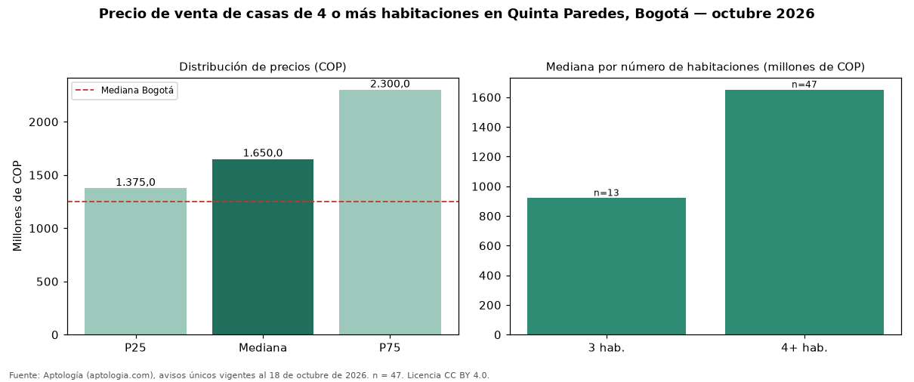

Precio de venta de casas de 4 o más habitaciones en Quinta Paredes, Bogotá — octubre 2026
Con 47 avisos únicos analizados, el precio mediano de casas de 4 o más habitaciones en venta en Quinta Paredes (localidad de Teusaquillo), Bogotá es COP 1,65 mil millones. Eso la ubica 32 % por encima de la mediana de Bogotá para casas de 4 o más habitaciones (COP 1,25 mil millones). Por metro cuadrado, la mediana es COP 5.672.500/m² (+27 % frente a COP 4.477.612/m² en Bogotá). En el mismo barrio, la mediana de casas es COP 920 millones con 3 habitaciones. El estrato más frecuente en los avisos es 4. La dispersión es moderada: el cuartil superior (COP 2,30 mil millones) es 1,7 veces el inferior (COP 1,38 mil millones). 81 % de los avisos incluye al menos un parqueadero. Datos abiertos CC BY 4.0 de Aptología; fuente y búsqueda de inmuebles: https://www.aptologia.com/casas-en-venta/bogota/quinta-paredes. Archivos: PDF de 2 páginas, CSV con las cifras y gráfica PNG.

| Avisos únicos | 47 |
|---|---|
| Percentil 25 | COP 1.375.000.000 |
| Mediana | COP 1.650.000.000 |
| Percentil 75 | COP 2.300.000.000 |
| Mediana por m² | COP 5.672.500 |
Fuente: avisos vigentes de portales inmobiliarios recopilados por Aptología, deduplicados (mínimo 30 avisos únicos por celda). Precios pedidos, no cerrados. Fecha: 2026-10-18.